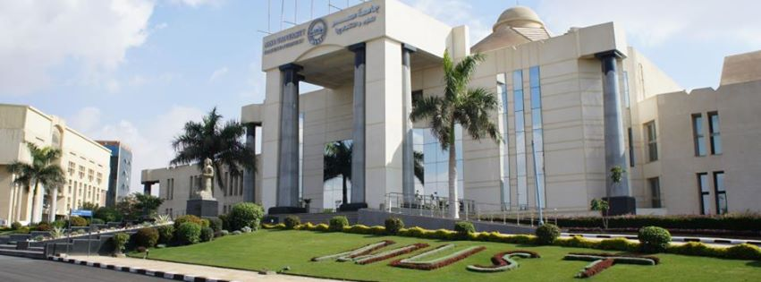

<div class="pages">

 
  <div data-page="projects" class="page no-toolbar no-navbar">
    <div class="page-content">
    
     <div class="navbarpages">
       <div class="nav_left_logo"><a href="index.html"></a></div>
       <div class="nav_right_button"><a href="menu.html"></a></div>
     </div>
     <div id="pages_maincontent">
       
 
 
  

        

              <h2 class="page_title">About</h2> 
      <div id="about_div" >
              <div class="page_content"> 
              
              <blockquote>
              Misr University for Science & Technology (MUST) was established by the presidential decree No.245/1996 in accordance with law No. 101/1992 governing private universities Egypt
              </blockquote>
          
              
              
              
			<p>MUST enjoys full legal recognition by all educational authorities In Egypt and is authorized to grant B.A, B.S, M.A, M.S, and Ph.D. Degrees in different fields of study.
              </p>
              
               
			<p>All our programs at MUST have been accredited by the Supreme Council of Universities in egypt. </p>
              
               
			<p>MUST is an active member of the Association of Arab universities, the International Association of university Presidents and the Association of African Universities.
              </p>
              
              <p>MUST has been assessed and certified as meeting the requirements of ISO 9001:2008 for Educational Service management for students after high school.
The certificate is valid from 05 August 2010 until 05 August 2013.</p> 

              
              </div>
               
               </div>
              
  
                  

 
      </div>
      
      
    </div>
  </div>
</div>